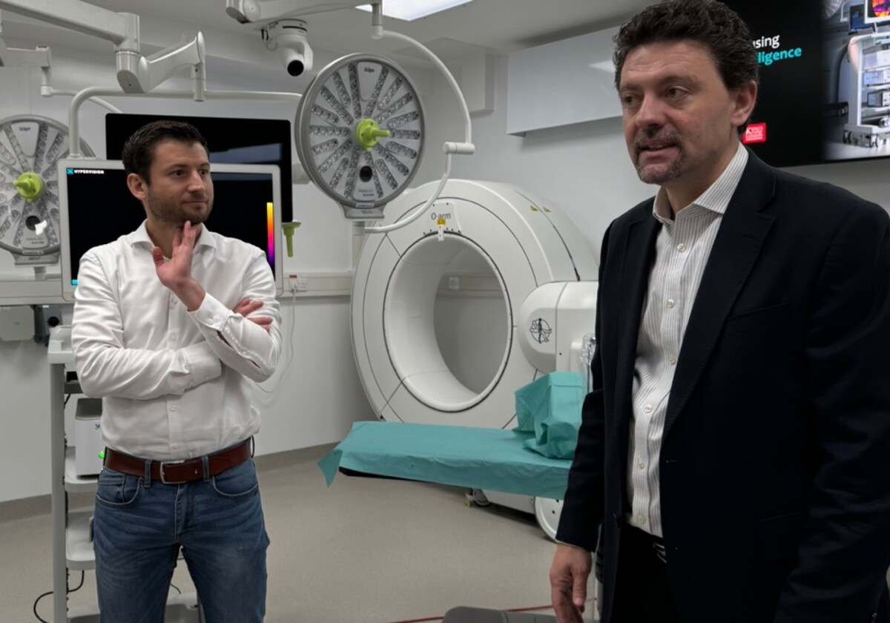

La Inteligencia Artificial Revoluciona la Medicina
Publicado el 28 de diciembre de 2024
La inteligencia artificial (IA) está transformando la medicina moderna, ofreciendo herramientas innovadoras que permiten diagnósticos más precisos y tratamientos personalizados. Desde algoritmos avanzados que analizan imágenes médicas hasta chatbots que ofrecen soporte emocional, la IA está marcando un antes y un después en el sector de la salud.
En un reciente estudio llevado a cabo por el Instituto de Innovación Médica, se descubrió que los algoritmos basados en IA pueden detectar cáncer de mama en mamografías con una precisión del 94%, superando el rendimiento promedio de los radiólogos experimentados. Esta tecnología no solo acelera el proceso de diagnóstico, sino que también reduce significativamente la tasa de falsos positivos.
Por otro lado, los hospitales están comenzando a implementar sistemas de IA para gestionar de manera más eficiente los recursos médicos. Un ejemplo destacado es el Hospital General de Boston, que utiliza un algoritmo para predecir la demanda de camas y optimizar la asignación de personal, reduciendo los tiempos de espera de los pacientes.
Sin embargo, la integración de la IA en la medicina plantea ciertos desafíos éticos y regulatorios. ¿Cómo asegurar la privacidad de los datos médicos? ¿Qué sucede si un algoritmo comete un error crítico? Estas son preguntas que deben abordarse a medida que esta tecnología se adopta a mayor escala.
En definitiva, la IA está demostrando ser una herramienta indispensable para mejorar la atención médica y salvar vidas. Con inversiones en investigación y regulaciones claras, su impacto positivo continuará creciendo en los próximos años.